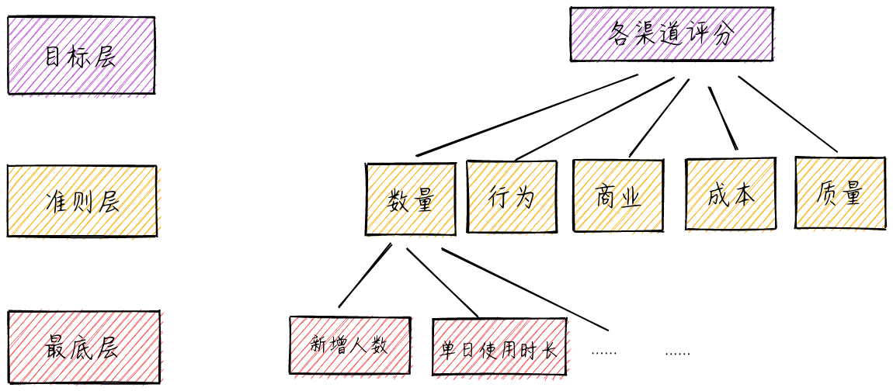
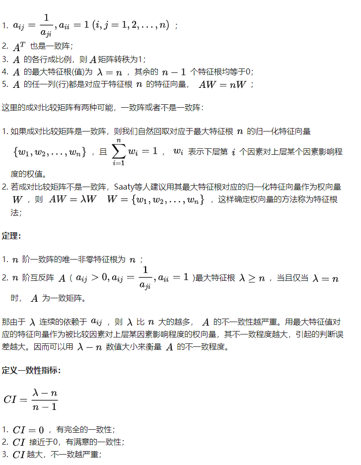
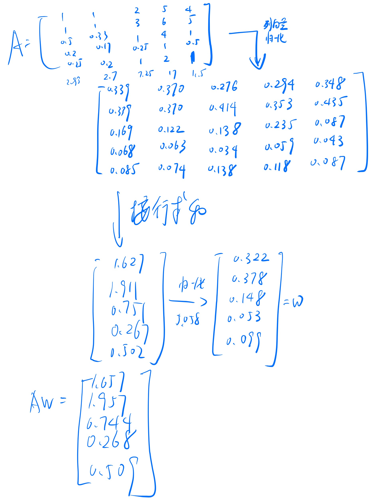
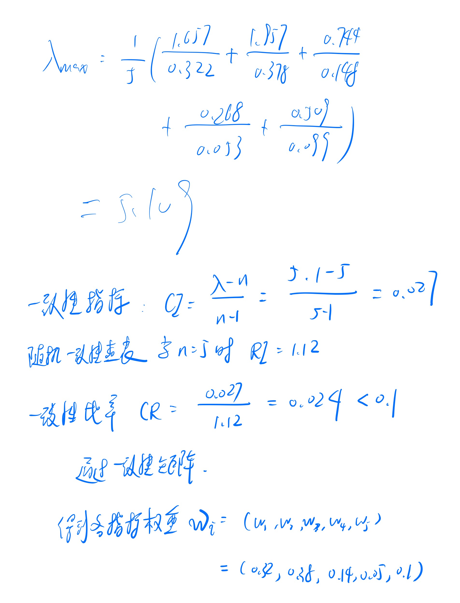
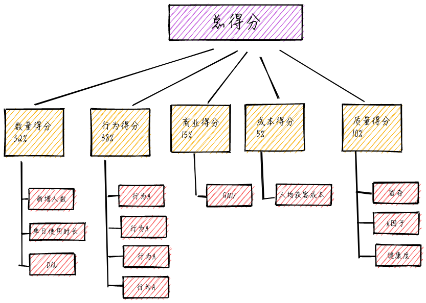
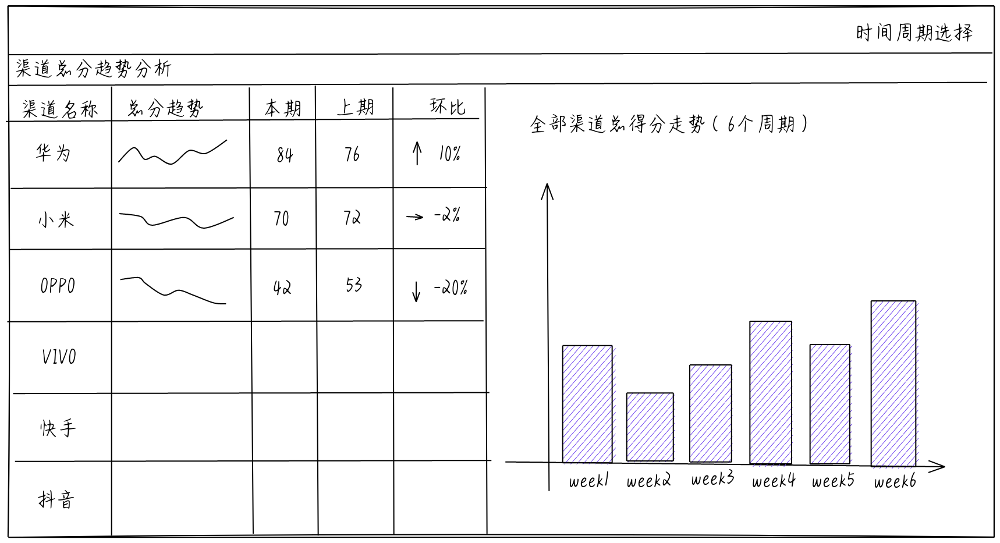
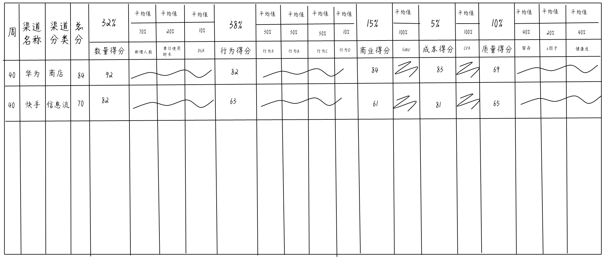

增长是个大麻烦，广告投放愁白头
渠道评估模型
常见的渠道投放的结算方式：
- CPA：cost per action按用户激活付费
- CPC：cost per click按点击收费
- CPD：（1）cost per download 按下载计费（2）cost per day 按天计费
- CPS：cost per sale按销售额计费
- CPT：cost per time按时间计费
- CPM：cost per mille按千人展示计费
按下载收费，会出现以下几种情况：
（1） 花了很多钱，用户只是下载，但没打开过APP
（2） 花了很多钱，用户下载打开APP，但留存差到爆炸
（3） 花了很多钱，用户下载打开APP，留存也ok，但没有任何其他有效行为
（4） 花了很多钱，用户下载打开APP，留存有效行为都ok，但是发现是虚拟机、设备异常或者重复激活（卸载APP再重新安装）
（5） 用户下载打开APP，留存有效行为都ok，机器也ok，但花了很多很多钱
什么是好渠道，什么是坏渠道，不是简简单单的留存高、用户行为好、成本低或者是GMV高就能说这个渠道质量好，需要综合考虑渠道质量。
构建模型
将渠道从5个方面来综合评价：
- 数量
- 行为
- 商业
- 成本
- 质量
渠道总得分=数量得分权重1+行为得分权重2+商业得分权重3+成本得分权重4+质量得分*权重5
打分方法
（1）各项一级指标、二级指标在0到100分范围内打分，无及格分数线
（2）对于可获取数据的定量指标，采用标准化的方式打分；若数据量级相差较大，可以先取对数，再进行标准化（减小量级差异造成的影响）
（3）从公司角度考虑，设置正向和反向指标，如新增人数为正向指标，成本为反向指标，即成本越高得分越低。
以新增得分为例：
新增得分 =
其中，为某个渠道的新增人数，Q为库中所有渠道新增人数的最大值，或者Q也可以为预设的上限值。
以成本为例：
成本得分 =
其中，为某个渠道的成本，MAX(G)为库中所有渠道人均成本的最大值，或者MAX(G)也可以为预设的上限值。
比如G设定为10，那么高于10元的用户此项得分会被评为0分。
MIN(G)为库中所有渠道人均成本最小值，或者MIN(G)也可以为预设的下限值。
比如G设定为10，那么高于10元的用户此项得分会被评为0分。
权重确立
方法：层次分析法AHP
层次分析法是一种定性和定量相结合的、系统的、层次化的分析方法。这种方法的特点就是在对复杂决策问题的本质、影响因素及其内在关系等进行深入研究的基础上，利用较少的定量信息使决策的思维过程数学化，从而为多目标、多准则或无结构特性的复杂决策问题提供简便的决策方法。是对难以完全定量的复杂系统做出决策的模型和方法。
可以分为以下四个步骤：
- 建立层次结构模型；
- 构造判断(成对比较)矩阵；
- 层次单排序及其一致性检验；
- 层次总排序及其一致性检验；
建立层次结构模型：
将决策的目标、考虑的因素(决策准则)和决策对象按他们之间的相互关系分成最高层、中间层和最低层，绘制层次结构图。
- 最高层(目标层)：决策的目的、要解决的问题；
- 中间层(准则层或指标层)：考虑的因素、决策的准则；
- 最低层：具体细节；

构造判断(成对比较)矩阵：
那在确定各层次各因素之间的权重时，如果只是定性的结果，则常常不容易被别人接受，因此使用一致矩阵法，即：
- 不把所有因素放在一起比较，而是两两比较；
- 对此时采用相对尺度，以尽可能减少性质不同的诸因素相互比较的困难，以提高准确性；
成对比较矩阵是表示本层所有因素针对上一层某一个因素(准侧或目标)的相对重要性的比较。成对比较矩阵的元素aij表示的是第i个因素相对于第j个因素的比较结果
| 标度 | 含义 |
|---|---|
| 1 | 表示两个因素相比，具有相同重要性 |
| 3 | 表示两个因素相比，一个因素比另一个因素稍微重要 |
| 5 | 表示两个因素相比，一个因素比另一个因素明显重要 |
| 7 | 表示两个因素相比，一个因素比另一个因素强烈重要 |
| 9 | 表示两个因素相比，一个因素比另一个因素极端重要成对比较矩阵是表示本层所有因素针对上一层某一个因素(准侧或目标)的相对重要性的比较。成对比较矩阵的元素aij表示的是第i个因素相对于第j个因素的比较结果 |
| 2,4,6,8 | 上述两相邻判断的中值 |
| 倒数 | 因素i与j比较的判断aij，则因素j与i比较的判断aji=1/aij |
第二层A的各个因素对目标层Z的影响两两比较的结果如下：
| Z | A1数量得分 | A2行为得分 | A3商业得分 | A4成本得分 | A5质量得分 |
|---|---|---|---|---|---|
| A1 | 1 | 1 | 2 | 5 | 4 |
| A2 | 1 | 1 | 3 | 6 | 5 |
| A3 | 1/2 | 1/3 | 1 | 4 | 1 |
| A4 | 1/5 | 1/6 | 1/4 | 1 | 1/2 |
| A5 | 1/4 | 1/5 | 1 | 2 | 1 |
比如则表示的是数量对成本来说明显重要。
那两两进行比较以后，怎么才能知道，下层各因素对上层某因素的影响程度的排序结果呢？
使用层次单排序及一致性检验
层次单排序：W的元素为同一层次因素对于上一层次因素某因素相对重要性的排序权值，这一过程称为层次单排序，那能否确认层次单排序，需要进行一致性检验，所谓一致性检验是指对成对比较矩阵确定不一致的允许范围。
一致性的性质：

为了衡量CI的大小，引入随机一致性指标RI，方法为随机构造500个成对比较矩阵，,,…，则可得到一致性指标，,…，
统计出来的RI的值
| n | 1 | 2 | 3 | 4 | 5 | 6 | 7 | 8 | 9 |
|---|---|---|---|---|---|---|---|---|---|
| RI | 0 | 0 | 0.58 | 0.90 | 1.12 | 1.24 | 1.32 | 1.41 | 1.43 |
定义一致性比率：
一般当一致性比率时，认为A的不一致程度在允许的范围内，有满意的一致性，通过一致性检验，可用其归一化特征向量作为权向量，否则要重新构造成对比较矩阵A，对加以调整
正互反阵最大特征根和特征向量的简化计算
精确计算复杂不必要
简化计算的思路：一致阵的任一列向量都是特征向量，一致性尚好的正互反阵的列向量都应近似特征向量，可取其某种意义下的平均。
和法：取列向量的算术平均


一级指标权重：
| 数量得分 | 行为得分 | 商业得分 | 成本得分 | 质量得分 |
|---|---|---|---|---|
| 32% | 38% | 15% | 5% | 10% |
模型指标骨架

BI展示
总体走势

各渠道细节展示
